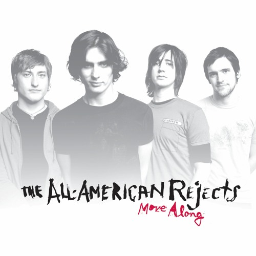

Hi, I'm Kyelle, Welcome to my Website! =D
About
Just a MAWD student who enjoys watching films. I like exploring new things, editing when bored, and listening to music when I need to escape.
This page is just a short introduction about me. I added my vlog and my favorite song (fave at the moment) so you can get a glimpse of what I enjoy. Nothing fancy—just me being me.
My Vlog
This vlog is 4 minutes, and it shows a bit of my life as a MAWD student and the little things I do. It’s simple and personal — the kind of video I’d watch again when I want to remember small moments.
🎵 My Favorite Song (atm) — Dirty Little Secret
I chose this song because it gives off that 2000s rebellious teenager vibe — loud, dramatic, and a little bit reckless. When I was younger, I always thought I’d grow up like those teens you see in movies, and honestly, I still like the idea. The beat is catchy, and no matter how many times I play it, it never gets old.
